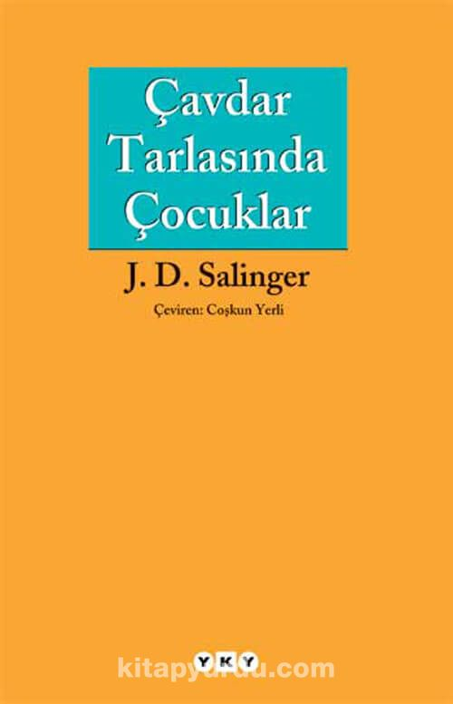

"The Catcher in the Rye" yani "Çavdar Tarlasındaki Çocuklar" J.D. Salinger tarafından yazılmış bir romandır. Kitap, ilk olarak 1951 yılında yayımlandı ve Amerikan edebiyatının en önemli eserleri arasında sayılmaktadır. Roman, 16 yaşındaki baş karakter Holden Caulfield'in New York'taki maceralarını ve kendisiyle olan iç hesaplaşmalarını anlatmaktadır. Kitap, gençlik isyanını,büyüme sürecini ve aidiyet duygusunu ele almasıyla dönemin gençlerinin ilgisini çekmiş ve günümüzde de popülerliğini korumaktadır.
